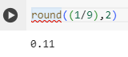

round()
The round() function is used to round numbers. If the answer to a math problem is a long number, you can use the round function to round it. However, there are some differentiating factors that make it different from other functions. It takes two inputs, not one. The first input is your expression or what you want it to solve. Then, you put a comma after the mathematical expression and after that, you put the number of how many decimal places you want it to round to.
In this example, we use the round function to round 1/9 to 2 decimal places. As mentioned above, we put round( the expression, the number of decimal places).

Exit
Next
Back